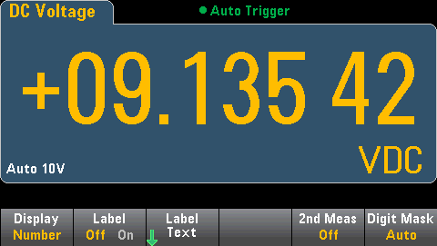
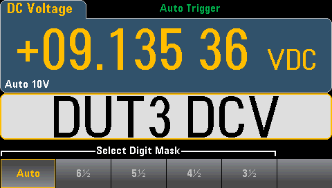
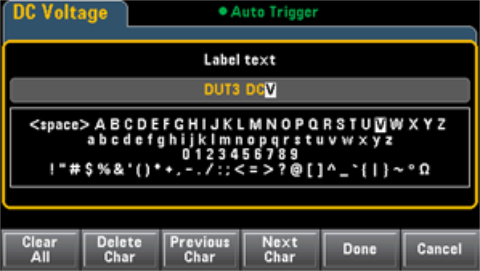
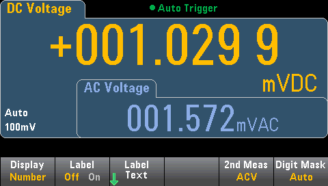
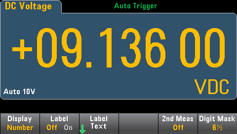
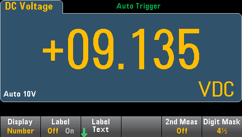

By default, the instrument displays readings as a number:

The Label softkey allows you to add a large text label on the screen. For example, you can use this to indicate what measurement is being taken by the DMM.

To enter the text, press Label Text and use the softkeys and front panel arrow keys to modify the label (below). Then press Done. The label's font automatically shrinks to accommodate longer labels.

Press 2nd Meas to select and display a secondary measurement. For example, for the DCV measurement function, you can select ACV, Peak, or Pre-Math as the secondary measurement function. With ACV selected as secondary, the display shows the DCV measurement near to top of the display, and the ACV measurement near the bottom of the display:

Refer to Secondary Measurements for more information on secondary measurements available for each measurement function.
The Digit Mask softkey specifies the number of digits shown.
For example, the following image shows 6½ digits.

In contrast, this image shows 4½ digits.

The Auto softkey specifies that the number of digits displayed is based on other function-specific settings, such as the measurement aperture, set in NPLCs. Measurements are always rounded, never truncated.